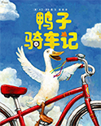

Tasks

鸭子骑车记 故事
| 作者 大卫夏农 | 出版社 海南出版公司 |
| 字数 5000 | ISBN编号 843957640 |
| 适合年级 二年级 |
开始时间 2016-10-10--结束时间 2016-11-10

简介

评论

测试题
鸭子骑车？这可真是个疯狂的想法！但有一只鸭子真的办到了！农场里的马、牛、羊、鸡、狗、老鼠……对鸭子骑车这件事有什么看法呢？在一个平平常常的下午，动物们干了一件很不平凡的事情…作者通过这个让人兴奋又愉悦的故事，生动地描绘出孩子勇于探险的心理特征，让孩子读后产生极大的满足感。书中各种动物的语言和表情都十分传神，和孩子一起朗读，会让孩子兴致勃勃地融入其中。而大胆的笔触和鲜艳的色彩，既吸引孩子的目光，更深入孩子的心灵，让他们萌发大胆尝试的勇气。